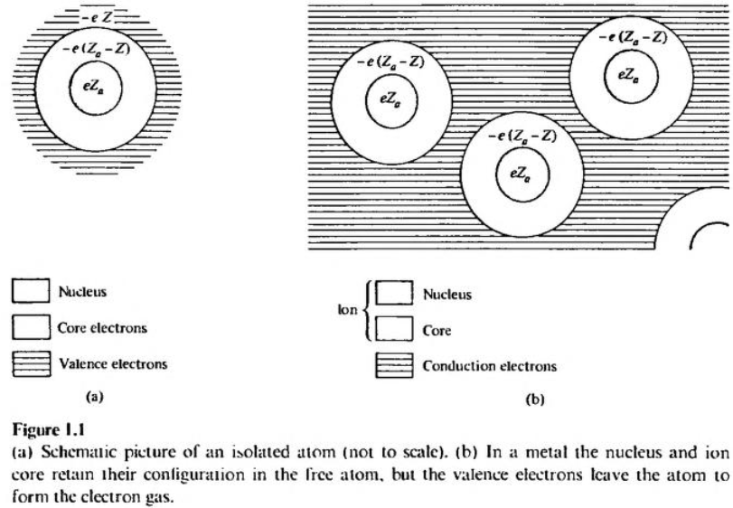
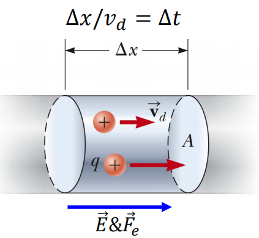
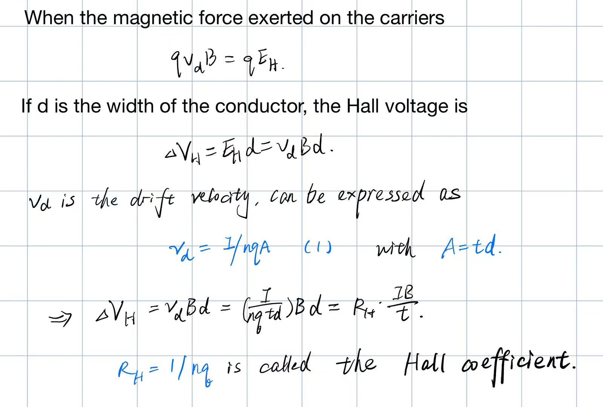
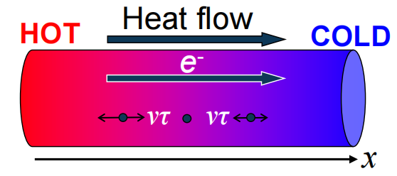
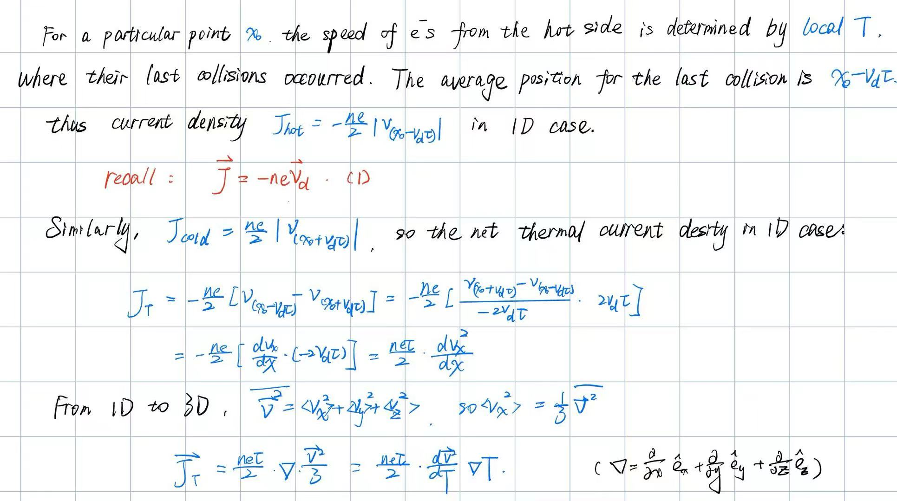
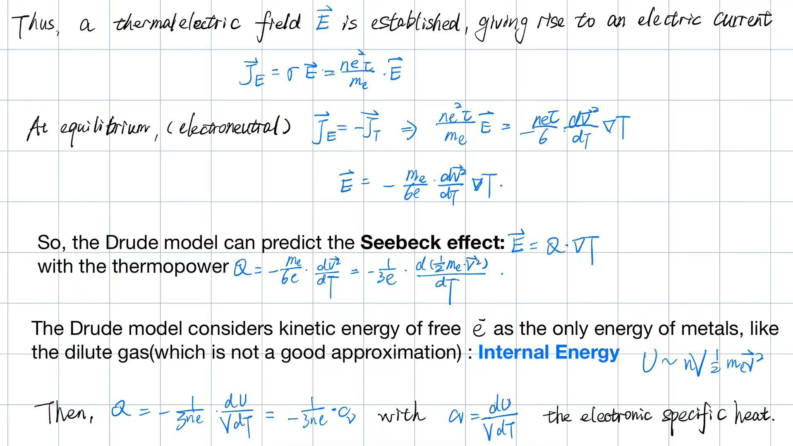
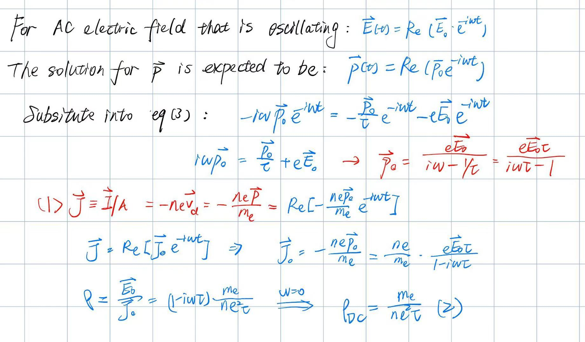

固体物理（一）Drude Model of Metals
Basic Assumptions of the Drude model（基本假定）
Backgound: J. J. Thomson’s discovery of the electron in 1897 had a vast and immediate impact on theories of the structure of matter, and suggested an obvious mechanism for conduction in metals. Three years after Thomson’s discovery, Drude constructed his theory of electrical and thermal conduction by applying the highly successful kinetic theory of gases to a metal, considered as a gas of electrons.
The reasons why chose metals as the study objects
- 20世纪初量子力学尚未建立，Drude模型基于经典统计力学与气体动力论（理想气体的运动学理论已经非常成功），而金属的宏观性质（如电阻率温度依赖性）可用经典理论近似描述。
- 工业革命对金属导电/导热机制的迫切需求（如电报、电力系统），推动了对金属电子行为的优先研究。
- 绝缘体/半导体的电子局域性强，需考虑量子效应（如能带理论），远超当时理论工具范围。
Assumptions
- Free electrons in metals are modelled as ideal gases —— Free electron gases(FEG)
- Positive ions are immobile, surrounded by tightly-bounded electrons (in contrast to free electrons which can move around).——这与原子物理中学习的类氢原子模型有些相似之处
- Note that the Drude model is before the first modern model of atoms

Approximations
- Independent electron approximation: neglect e--e- interactions (Good)
- Free electron approximation: neglect e--ion interactions (Not so Good)
- Motion of free electrons follows classical Newton’s laws: Electrons move in straight lines until being interrupted by collisions
- Relaxation time: an electron experiences a collision with a probability per unit time 1/τ (known as relaxation time or mean free time), which is taken to be independent of an electron's position and velocity.
So that the probability of an electron undergoing a collision in any infinitesimal time interval of length dt is just dt/τ.
The average speed of free electrons vd depends on temperature T and external electric field E. Each collision resets the electron speed whose average is determined by T. (The hotter, the faster)What about the average velocity after collision?——It’s 0
注意： speed是速度，velocity是速率。
Success of the Drude model
Ohm’s law
We assume that charged particles move through a cylindrical conductor of cross-sectional area A.

$n$ is the number of mobile charge carriers per unit volume.
$N$ is the total number of charge carriers in a segment.
The total charge is the number of carriers times the charge per carrier:
$$
\Delta Q=Nq=(nA\Delta x)q
$$
Assume the carriers move with a velocity vd parallel to the axis of the cylinder such that they experience a displacement $\Delta x=v_d\Delta t$ in a time interval $\Delta t$. Then:
$$
\Delta Q=nqAv_d\Delta t
$$
$v_d$ is an average speed called the drift speed. (2.23 x 10-4 m/s for a copper wire carrying a current of 10.0 A)
The average current is : $I_{avg}=\frac{\Delta Q}{\Delta t}=nqAv_d$
The current density:
Then,
$$
\vec {v}_d=\frac{\vec {F}}{m_e}\tau=-\frac{e\vec {E}\tau}{m_e}
$$
$$
\rightarrow J=-nev_d=\frac{ne^2\tau}{m_e}\vec {E}
$$
According to Ohm’s law: $\Delta V=IR=El$ $I=JA$ $R=\rho l/A$
We can derive that: $J\equiv I/A=\frac{\Delta V}{AR}=\frac{El}{AR}=E/\rho$
So that: $\frac{ne^2\tau}{m_e}=\frac{1}{\rho}$
We can know the relationship between $\tau$ and $\rho$:
This result is usually stated in terms of the inverse of the resistivity, the conductivity $\sigma =1/\rho$:
We proved Ohm’s law from Drude model. From the result, we can know that the resistivity is proportional to the collision rate - The origin of resistivity is collisions!
Let’s consider the average momentum $\overline p(t+dt)$ after an infinitesimal time $dt$:
The probability of an e- experiencing a collision during $dt$ is $dt/\tau$.
- For e-s with no collision during $dt$, the probability is $1-dt/\tau$. The momentum change is $\Delta p=\vec {F}dt=-e\vec {E}dt$.
- For e-s experiencing collisions during $dt$, as collisions reset speed/momentum, only the momentum change after collisions is considered which is $\leq e\vec{E}dt$.
On average:
$$
\begin{array}
\overline p(t+dt)=(1-\frac{dt}{\tau})[\overline p(t)-e\vec{E}dt]+\frac{dt}{\tau}O(dt) \newline
=\overline p(t)-\frac{dt}{\tau}\overline p(t)-e\vec{E}dt+O(dt^2) \newline
\overline p(t+dt)-\overline p(dt)\approx \frac{dt}{\tau}\overline p(t)-e\vec{E}dt \
\end{array}
$$
This simply states that the effect of individual electron collisions is to introduce a frictional damping term into the equation of motion for the momentum per electron.^[1]^
Hall effect

This relationship shows that a properly calibrated conductor can be used to measure the magnitude of an unknown magnetic field.
Works well for alkali metals with 1 valence electron(Li、Na、K). Not good for other metals.
Thermal current
Drude model assumes heat transfer in metal is through free electrons:
- Metals are more efficient in heat transfer than insulators – heat transfer by ions are less important than by free electrons.


Thermal electric effect

AC Resistivity
$$
Recall \ the\ equation\eqref{eq:a}
$$

Summary
The Drude model based on some assumptions above demonstrated considerable success in explaining DC/AC Resistivity、Ohm's law、thermoelectric effect、plasma frequency(not covered here), etc. as illustrated before, which is still used today to provide a simple pictures and rough estimates of metallic properties. (especially the independent electron approximation)
On the other hand, the failure of the Drude model on experiments such as Hall effect、thermopower and specific heat indicates the deficiencies of this free-electron-gas model, which includes
- Did not properly explain the collision mechanism of free e- .
- Did not account for the ion motion and its contribution to energy and heat transfer.
To improve the Drude model, further corrections using quantum statistical mechanics are required —— the Sommerfeld Theory of Metals.


![生物化学复习[五] 酶通论](https://i.loli.net/2020/05/01/gkihqEjXxJ5UZ1C.jpg)